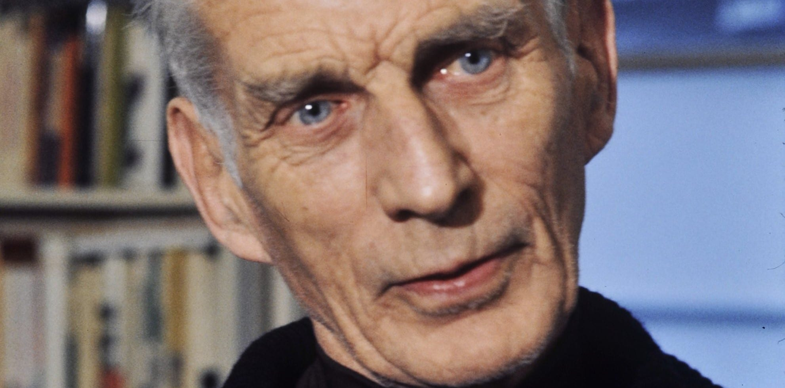

In this document we will try to explain some notable people born in the city of Dublin
Colin Farrel
Colin Farrel Aunque ahora es una estrella de Hollywood y no viene mucho a Dublín, después de haber aparecido en grandes películas como Phone Booth, In Bruges y Total Recall, Colin siempre se ha sentido orgulloso de sus raíces. «Ser irlandés es una gran parte de lo que soy» , dice. «Lo llevo a todas partes conmigo»

Samuel Beckett
Samuel Beckett Born in Dublin in 1906, this famous avant-garde playwright received the Nobel Prize for Literature in 1969. After studying French, Italian and English at Trinity College, Samuel spent more time in Paris and wrote in both English and French. His most famous work is probably the play "Waiting for Godot." In Dublin you will find the Samuel Beckett Center (a theater) and the Samuel Beckett Bridge, which crosses the Liffey River.
